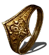

Recomendaciones
Anillo del favor y protección: Aumenta la vida, la energía y la carga de equipo en un 20%. Sin embargo, si el jugador se lo quita el anillo se destruye.
Anillo dragón rugiente: Aumenta el poder de todos los hechizos y piromancias en un 20%.
Anillo de Havel: Aumenta la carga maxima en un 50%. (Este es por si quieres llevar armaduras más pesadas).
Anillo de Cloranthy: Aumenta la velocidad de recuperación de energía.
Para obtener almas y objetos más facilmente.
Anillo de serpiente dorada: Aumenta la tasa de objetos descubiertos en 200 puntos.
Anillo de serpiente plateada: Aumenta la cantidad de almas obtenidas en un 20%.